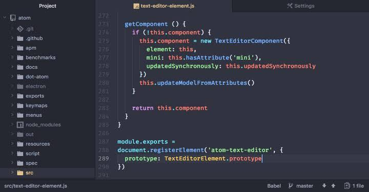

Lima APK Coding Terbaik di Perangkat PC dan Laptop
1. Sublime Text
Aplikasi coding yang satu ini cukup kompatibel karena dapat
digunakan pada Windows, Mac, maupun Linux. Namun, di antara
ketiganya, Linux-lah sistem operasi yang
paling cocok dengan aplikasi Sublime Text. Selain memiliki performa
yang maksimal dan tampilan yang beragam namun tetap sederhana,
Sublime Text cukup ramah pada
berbagai pengembangan. Aplikasi ini juga dapat Anda gunakan secara
gratis dengan jangka waktu tertentu. Sedangkan untuk mendapatkan
fitur yang lengkap
seperti fitur instant project switch, customize anything, goto
anything, command palette, multiple selections, distraction free
mode, split editing dan plugin API
disertai pula lisensi
aplikasi, Anda harus mengeluarkan biaya berkisar 70 US Dollar.
2. Visual Studio Code
Aplikasi coding yang juga besutan dari Windows ini mengusung
tampilan sederhana namun menarik. Visual Code Studio dapat dengan
mudah
Anda peroleh secara berbayar maupun gratis, loh! Meskipun tak perlu
mengeluarkan biaya, fitur yang dihadirkan cukup bersaing, seperti
keyboard shortcut,
melengkapi barisan kode secara otomatis, menggunakan mode Zen untuk
menyembunyikan menu dan ikon dan lain-lain.
3. Notepad
Aplikasi coding ini cukup familiar di telinga programmer. Pasalnya,
ini adalah aplikasi bawaan Windows yang dikembangkan dari Notepad.
Meskipun begitu, aplikasi ini
dapat didistribusikan sebagai perangkat lunak bebas yang dapat
ditambahkan banyak plugins. Notepad++ dikenal dengan tampilan
jendela tab, sehingga
Anda dapat membuka beragam file dalam satu waktu. Selain itu,
aplikasi coding ini memiliki beragam fitur canggih seperti
text-shortening, macro recording,
shortcut customization, auto-completion dan masih banyak lagi.
Notepad++ yang dapat Anda peroleh secara gratis ini memiliki GUI dan
berbagai bahasa pemrograman
antara lain Assembly, C, Perl, PHP, Python, C++, Java, Javascript,
C#, CSS, HTML, Pascal, Ruby, Shell, SQL, VB dan XML.
4. Kodomo
Komodo Edit adalah aplikasi coding yang kompatibel dan dapat
digunakan pada segala macam sistem operasi, mau itu Windows, Mac OS,
atau pun Linux, semuanya bisa!
Aplikasi coding yang diluncurkan pada tahun 2007 ini sudah lama
menemani programmer dengan beragam fiturnya yang lengkap dan bahasa
pemrograman yang luas
meliputi HTML, SQL, CSS, Python, PHP, hingga Ruby
5. Atom
Aplikasi coding milik GitHub ini mendukung banyak bahasa dan dilengkapi dengan tampilan yang menarik. Aplikasi yang terdapat pada Windows, Mac OS dan Linux ini bisa dikatakan modular (program yang cukup besar dibagi-bagi menjadi beberapa bagian yang lebih kecil sehingga mudah dipahami dan dapat digunakan kembali). Karena, Anda dapat dengan mudah menambahkan fitur lainnya dengan menginstall plugins yang tersedia pada aplikasi Atom ini. Beberapa fitur yang dimiliki aplikasi coding satu ini diantaranya teknologi web based, fuzzy finder, TextMate grammars, integrasi dengan Node.js, fast project-wide dan file system browser
